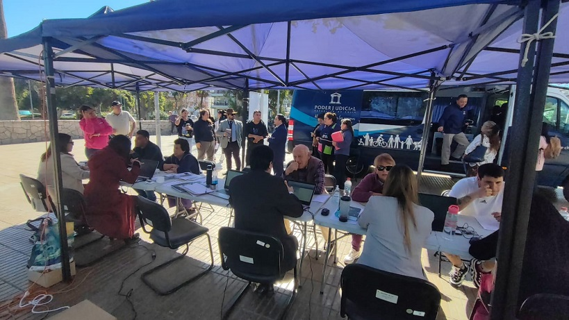

Copiapó, 3 de julio de 2025 – No hay mejor noticia que esta: ¡los sueldos están pagados! Y todo gracias al impecable trabajo de David Villarroel, funcionario del área de Remuneraciones, quien ha liderado con eficiencia y compromiso el proceso de pagos de toda la jurisdicción de Atacama.
Con rigurosidad, orden y una buena dosis de buena energía, David se encargó de coordinar y ejecutar todas las etapas necesarias para que el proceso de remuneraciones se realizara en tiempo y forma. Su labor no solo implica cumplir con fechas clave, sino también garantizar que cada funcionario reciba lo justo y correcto por su trabajo.
“No hay momento más feliz en la oficina que cuando llega el pago... y por eso es justo reconocer a quien lo hace posible”, comentaron entre risas algunos funcionarios, agradeciendo la gestión.
Este tipo de logros, que muchas veces suceden "tras bambalinas", son fundamentales para el buen funcionamiento institucional y merecen ser destacados. David Villarroel, con su profesionalismo y dedicación, representa ese compromiso silencioso pero vital que permite que la rueda siga girando mes a mes.
Desde ya, ¡gracias David por tu entrega y por alegrar este inicio de mes!
